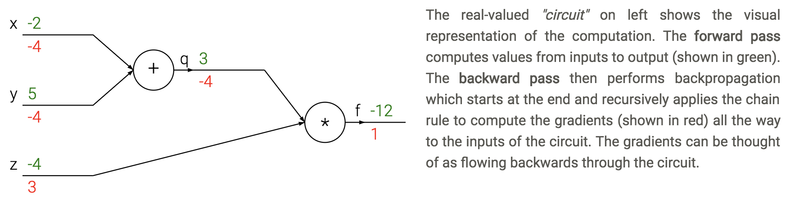
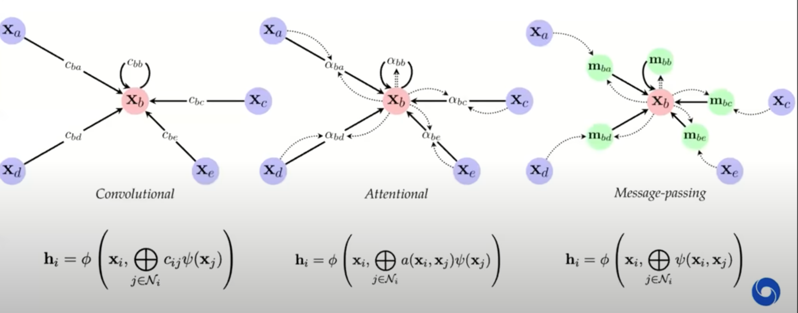

deep learning
view markdownThis note covers miscellaneous deep learning, with an emphasis on different architectures + empirical tricks.
See also notes in 📌 unsupervised learning, 📌 disentanglement, 📌 nlp
basics
- basic perceptron update rule
- if output is 0 but should be 1: raise weights on active connections by d
- if output is 1 but should be 0: lower weights on active connections by d
- perceptron convergence thm - if data is linearly separable, perceptron learning algorithm wiil converge
- transfer / activation functions
- sigmoid(z) = $\frac{1}{1+e^{-z}}$
- Binary step
- TanH (always preferred to sigmoid)
- Rectifier = ReLU
- Leaky ReLU - still has some negative slope when <0
- rectifying in electronics converts analog -> digital
- rare to mix and match neuron types
- deep - more than 1 hidden layer
- regression loss = $\frac{1}{2}(y-\hat{y})^2$
- classification loss = $-y log (\hat{y}) - (1-y) log(1-\hat{y})$
- can’t use SSE because not convex here
- multiclass classification loss $=-\sum_j y_j ln \hat{y}_j$
- backpropagation - application of reverse mode automatic differentiation to neural networks’s loss
- apply the chain rule from the end of the program back towards the beginning
- $\frac{dL}{dx_i} = \frac{dL}{dz} \frac{\partial z}{\partial x_i}$
- sum $\frac{dL}{dz}$ if neuron has multiple outputs z
- L is output
- $\frac{\partial z}{\partial x_i}$ is actually a Jacobian (deriv each $z_i$ wrt each $x_i$ - these are vectors)
- each gate usually has some sparsity structure so you don’t compute whole Jacobian
- apply the chain rule from the end of the program back towards the beginning
- pipeline
- initialize weights, and final derivative ($\frac{dL}{dL}=1$)
- for each batch
- run network forward to compute outputs at each step
- compute gradients at each gate with backprop
- update weights with SGD

training
- vanishing gradients problem - neurons in earlier layers learn more slowly than in later layers
- happens with sigmoids
- dead ReLus
- exploding gradients problem - gradients are significantly larger in earlier layers than later layers
- RNNs
- batch normalization - whiten inputs to all neurons (zero mean, variance of 1)
- do this for each input to the next layer
- dropout - randomly zero outputs of p fraction of the neurons during training
- like learning large ensemble of models that share weights
- 2 ways to compensate (pick one)
- at test time multiply all neurons’ outputs by p
- during training divide all neurons’ outputs by p
- softmax - takes vector z and returns vector of the same length
- makes it so output sums to 1 (like probabilities of classes)
- tricks to squeeze out performance
- ensemble models
- (stochastic) weight averaging can help a lot
- test-time augmentation
- this could just be averaging over dropout resamples as well
- gradient checkpointing (2016 paper)
- 10x larger DNNs into memory with 20% increase in comp. time
- save gradients for a carefully chosen layer to let you easily recompute
CNNs
- kernel here means filter
- convolution G- takes a windowed average of an image F with a filter H where the filter is flipped horizontally and vertically before being applied
- G = H $\ast$ F
- if we do a filter with just a 1 in the middle, we get the exact same image
- you can basically always pad with zeros as long as you keep 1 in middle
- can use these to detect edges with small convolutions
- can do Guassian filters
- convolutions typically sum over all color channels
- 1x1 conv - still convolves over channels
- pooling - usually max - doesn’t pool over depth
- people trying to move away from this - larger strides in conversation layers
- stacking small layers is generally better
- most of memory impact is usually from activations from each layer kept around for backdrop
- visualizations
- layer activations (maybe average over channels)
- visualize the weights (maybe average over channels)v
- feed a bunch of images and keep track of which activate a neuron most
- t-SNE embedding of images
- occluding
- weight matrices have special structure (Toeplitz or block Toeplitz)
- input layer is usually centered (subtract mean over training set)
- usually crop to fixed size (square input)
- receptive field - input region
- stride m - compute only every mth pixel
- downsampling
- max pooling - backprop error back to neuron w/ max value
- average pooling - backprop splits error equally among input neurons
- data augmentation - random rotations, flips, shifts, recolorings
- siamese networks - extract features twice with same net then put layer on top
- ex. find how similar to representations are
- famous cnns
- LeNet (1998)
- first, used on MNIST
- AlexNet (2012)
- landmark (5 conv layers, some pooling/dropout)
- ZFNet (2013)
- fine tuning and deconvnet
- VGGNet (2014)
- 19 layers, all 3x3 conv layers and 2x2 maxpooling
- GoogLeNet (2015)
- lots of parallel elements (called Inception module)
- Msft ResNet (2015)
- very deep - 152 layers
- connections straight from initial layers to end
- only learn “residual” from top to bottom
- very deep - 152 layers
- Region Based CNNs (R-CNN - 2013, Fast R-CNN - 2015, Faster R-CNN - 2015)
- object detection
- Karpathy Generating image descriptions (2014)
- RNN+CNN
- Spatial transformer networks (2015)
- transformations within the network
- Segnet (2015)
- encoder-decoder network
- Unet (2015)
- Ronneberger - applies to biomedical segmentation
- Pixelnet (2017)
- predicts pixel-level for different tasks with the same architecture
- convolutional layers then 3 FC layers which use outputs from all convolutional layrs together
- Squeezenet
- Yolonet
- Wavenet
- Densenet
- NASNET
- Efficientnet (2019)
- LeNet (1998)
RNNs
- feedforward NNs have no memory so we introduce recurrent NNs
- able to have memory
- could theoretically unfold the network and train with backprop
- truncated - limit number of times you unfold
- $state_{new} = f(state_{old},input_t)$
- ex. $h_t = tanh(W h_{t-1}+W_2 x_t)$
- train with backpropagation through time (unfold through time)
- truncated backprop through time - only run every k time steps
- error gradients vanish exponentially quickly with time lag
- LSTMS
- have gates for forgetting, input, output
- easy to let hidden state flow through time, unchanged
- gate $\sigma$ - pointwise multiplication
- multiply by 0 - let nothing through
- multiply by 1 - let everything through
- forget gate - conditionally discard previously remembered info
- input gate - conditionally remember new info
- output gate - conditionally output a relevant part of memory
- GRUs - similar, merge input / forget units into a single update unit
transformers
- transformers original paper
- http://colah.github.io/posts/2014-03-NN-Manifolds-Topology/
graph neural networks
- Theoretical Foundations of Graph Neural Networks
- inputs are graphs
- e.g. molecule input to classification
- one big study: “a deep learning appraoch to antibiotic discovery” - using GNN classification of antibiotic resistance, came up with 100 candidate antibiotics and were able to test them
- e.g. traffic maps - nodes are intersections
- invariances in CNNs: translational, neighbor pixels relate a lot more
- simplest setup: no edges, each node $i$ has a feature vector $x_i$ (really a set not a graph)
- X is a matrix where each row is a feature vector
- note that permuting rows of X shouldn’t change anything
- permutation invariant: $f(PX) = f(X)$ for all permutation matrices $P$
- e.g. $\mathbf{P}{(2,4,1,3)} \mathbf{X}=\left[\begin{array}{llll}0 & 1 & 0 & 0 \ 0 & 0 & 0 & 1 \ 1 & 0 & 0 & 0 \ 0 & 0 & 1 & 0\end{array}\right]\left[\begin{array}{lll}- & \mathbf{x}{1} & - \ - & \mathbf{x}{2} & - \ - & \mathbf{x}{3} & - \ - & \mathbf{x}{4} & -\end{array}\right]=\left[\begin{array}{lll}- & \mathbf{x}{2} & - \ - & \mathbf{x}{4} & - \ - & \mathbf{x}{1} & - \ - & \mathbf{x}_{3} & -\end{array}\right]$
- ex. Deep Sets model (zaheer et al. ‘17): $f(X) = \phi \left (\sum_k \psi(x_i) \right)$
- permutation equivariant: $f(PX) = P f(X)$ - useful for when we want answers at the node level
- graph: augment set of nodes with edges between them (store as an adjacency matrix)
- permuting permutation matrix to A requires operating on both rows and cols: $PAP^T$
- permutation invariance: $ f\left(\mathbf{P X}, \mathbf{P A P}^{\top}\right)=f(\mathbf{X}, \mathbf{A})$
- permutation equivariance: $f\left(\mathbf{P X}, \mathbf{P A P}^{\top}\right)=\mathbf{P} f(\mathbf{X}, \mathbf{A})$
- can now write an equivariant function that is extracts features not only of X, but also its neighbors: $g(x_b, X_{\mathcal N_b})$
- tasks: node classification, graph classification, link (edge) prediction)
- 3 flavors of GNN layers for extracting features from nodes / neighbors: simplest to most complex
- message-passing actually passes vectors to be sent across edges

- previous approaches map on to gnns well
- GNNs explicitly construct local features, much like previous works
- local objectives: features of nodes i and j should predict existence of edge $(i, j)$
- random-walk objectives: features should be similar if i and j co-occur on a short random walk (e.g. deepwalk, node2vec, line)
- similarities to NLP if we think of words as nodes and sentences as walks
- we can think of transformers as fully-connect graph networks with attentional form of GNN layers
- one big difference: positional embeddings often used, making the input not clearly a graph
- these postitional embeddings often take the form of sin/cos - very similar to DFT eigenvectors of a graph
- one big difference: positional embeddings often used, making the input not clearly a graph
- we can think of transformers as fully-connect graph networks with attentional form of GNN layers
- spectral gnns
- operate on graph laplacian matrix $L = D - A$ where $D$ is degree matrix and $A$ is adjacency matrix - more mathematically convenient
- probabilistic modeling - e.g. assome markov random field and try to learn parameters
- this connects well to a message-passing GNN
- GNNs explicitly construct local features, much like previous works
- GNN limitations
- ex. can we tell whether 2 graphs are isomorphic - often no?
- cank make GNNs more powerful by adding positional features, etc.
- can also embed sugraphs together
- things are more difficult in continuous case…
- geometric deep learning: invariances and equivariances can be appllied generally to get a large calss of architectures between convolutions and graphs
misc architectural components
- coordconv - break translation equivariance by passing in i, j coords as extra filters
- deconvolution = transposed convolution = fractionally-strided convolution - like upsampling
- attention = vector of importance weights: in order to predict or infer one element, such as a pixel in an image or a word in a sentence, we estimate using the attention vector how strongly it is correlated with (or “attends to” as you may have read in many papers) other elements and take the sum of their values weighted by the attention vector as the approximation of the target
misc
- Deep Learning Interviews: Hundreds of fully solved job interview questions from a wide range of key topics in AI
- adaptive pooling can help deal with different sizes
- NeRF: Representing Scenes as Neural Radiance Fields for View Synthesis
- given multiple views, generate depth map + continuous volumetric repr.
- dnn is overfit to only one scene
- inputs: a position and viewing direction
- output: for that position, density (is there smth at this location) + color (if there is smth at this location)
- then, given new location / angle, send a ray through for each pixel and see color when it hits smth
- Implicit Neural Representations with Periodic Activation Functions
- similar paper
- architecture search: learning to learn
- optimal brain damage - starts with fully connected and weeds out connections (Lecun)
- tiling - train networks on the error of previous networks